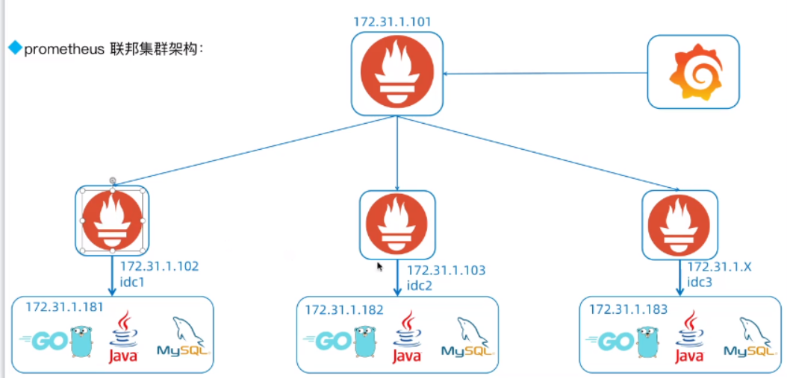
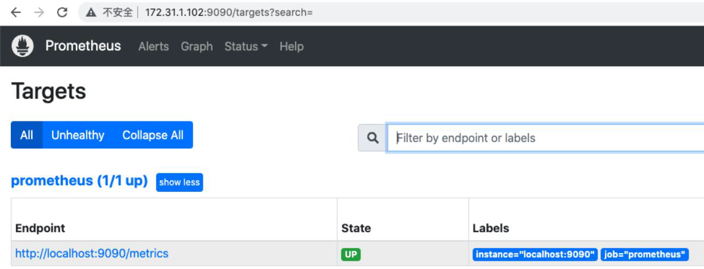
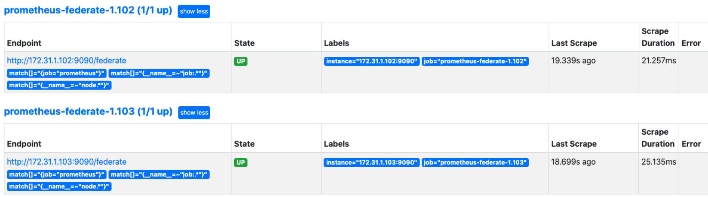
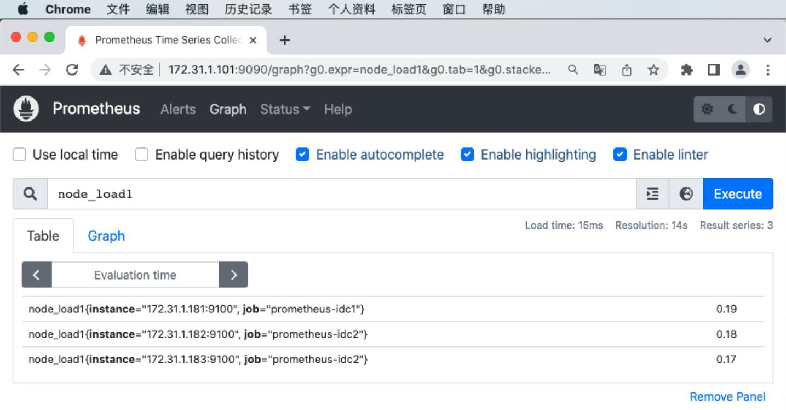
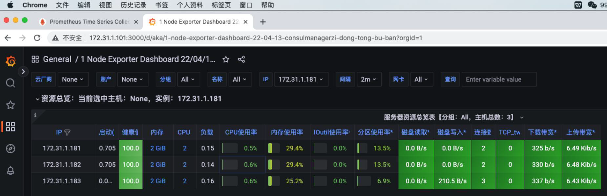

prometheus Federation(联邦集群)
联邦机制可以理解为是 Prometheus 内置支持的一种集群方式，核心就是Prometheus数据的级联抓取。比如某公司有8套Kubernetes，每套Kubernetes集群都部署了一个Prometheus，这8个Prometheus就形成了8个数据孤岛，没法在一个地方看到8个Prometheus的数据。
当然，我们用Grafana或Nightingale，把这8个Prometheus作为数据源接入，然后就可以在一个Web上通过切换数据源的方式查看不同的数据了，但本质还是分别查看，没法做多个Prometheus数据的联合运算。
而联邦机制，一定程度上就可以解决这个问题，把不同的Prometheus数据聚拢到一个中心的Prometheus中
prometheus 联邦集群架构：

部署prometheus server：
- Prometheus 主server和prometheus 联邦server分别部署prometheus服务端程序：
root@prometheus-server2:/usr/local/src# tar xvf prometheus-server-2.40.5-onekey-install.tar.gz
root@prometheus-server2:/usr/local/src# bash prometheus-install.sh
root@prometheus-server3:/usr/local/src# tar xvf prometheus-server-2.40.5-onekey-install.tar.gz
root@prometheus-server3:/usr/local/src# bash prometheus-install.sh

部署prometheus node_exporter：
被监控节点部署node_exporter：
root@prometheus-node2:/usr/local/src# tar xvf node-exporter-1.5.0-onekey-install.tar.gz
root@prometheus-node2:/usr/local/src# bash node-exporter-1.5.0-onekey-install.sh
root@prometheus-node3:/usr/local/src# tar xvf node-exporter-1.5.0-onekey-install.tar.gz
root@prometheus-node3:/usr/local/src# bash node-exporter-1.5.0-onekey-install.sh
配置prometheus联邦节点收集node-exporter指标数据：
联邦节点1-172.31.1.102：
让 102 收集 181 的数据
root@prometheus-server2:/apps/prometheus# vim prometheus.yml
- job_name: "prometheus-idc1"
static_configs:
- targets: ["172.31.1.181:9100"]
root@prometheus-server2:/apps/prometheus# systemctl restart prometheus.service
联邦节点2-172.31.1.03：
让 103 收集 182和183 的数据
root@prometheus-server3:/apps/prometheus# vim prometheus.yml
- job_name: "prometheus-idc2"
static_configs:
- targets: ["172.31.1.182:9100","172.31.1.183:9100"]
root@prometheus-server3:/apps/prometheus# systemctl restart prometheus.service
验证prometheus targets状态：

配置prometheus 通过联邦节点收集的node-exporter指标数据:
# vim /apps/prometheus/prometheus.yml
- job_name: 'prometheus-federate-2.102'
scrape_interval: 10s
honor_labels: true
metrics_path: '/federate'
params:
'match[]':
- '{job="prometheus"}'
- '{__name__=~"job:.*"}'
- '{__name__=~"node.*"}'
static_configs:
- targets:
- '172.31.1.102:9090'
- job_name: 'prometheus-federate-2.103'
scrape_interval: 10s
honor_labels: true
metrics_path: '/federate'
params:
'match[]':
- '{job="prometheus"}'
- '{__name__=~"job:.*"}'
- '{__name__=~"node.*"}'
static_configs:
- targets:
- '172.31.1.103:9090'
# curl -X POST http://172.31.1.101:9090/-/reload
验证prometheus 通过联邦节点收集的node-exporter指标数据:

grafana 验证数据：
